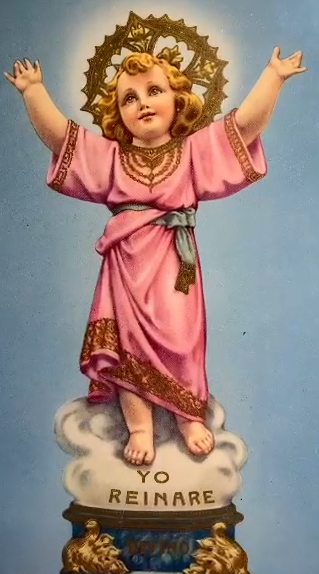

Postrado ante tus pies, humildemente, vengo a pedirte dulce Jesús mío, poderte repetir constantemente
Si la confianza es prueba de ternura, esta prueba de amor darte yo ansío, aun cuando esté sumido en amargura, MI BUEN NIÑO JESÚS, EN TI CONFÍO.
En las horas más tristes de mi vida, cuando todos me dejen, oh Dios mío, y el lama de este por penas combatida, MI BUEN NIÑO JESÚS, EN TI CONFÍO.
Aunque sienta venir la desconfianza, y aunque todos me miren con desvío, no será confundida mi confianza, MI BUEN NIÑO JESÚS, EN TI CONFÍO.
Si contraje contigo santa alianza y te di todo mi amor y mi alabardero, como ha de ser frustrada mi esperanza, MI BUEN NIÑO JESÚS, EN TI CONFÍO.
Y SIENTO UNA CONFIANZA DE TAL SUERTE, que sin temor a nada Jesús mío, espero repetir hasta la muerte, MI BUEN NIÑO JESÚS, EN TI CONFÍO.
Por que te agitas y te confundes por los problemas que trae la vida. Por que te centras en pensamientos que te angustian al querer comprender las cosas que te pasan. En lugar de hacer esto cierra los ojos de tu alma y en paz dime DIVINO NIÑO JESÚS EN TI CONFÍO.
Déjame controlar tus cosas y estas irán tornándose. Entrégate a mí con absoluta confianza y deja tu futuro en mis manos. Si te entregas totalmente a mí, todas las cosas serán resultas con tranquilidad, de acuerdo con mis planes. No arruines mis planes tratando de imponer tus ideas, déjame ser tu Dios y actuar libremente en tu vida. Solo dime frecuentemente DIVINO NIÑO JESÚS EN TI CONFÍO.
Lo que más te lastima al tratar de razonarlo todo de acuerdo a tus pensamientos, e intentar resolver los problemas a tu manera. Cuando me digas DIVINO NIÑO JESÚS EN TI CONFÍO.
No seas como el paciente que le dice al doctor "Cúreme", pero le sugiere la mejor forma de hacerlo. Déjate curar por mis brazos divinos, no tengas miedo. Yo te amo, pero necesito mis manos libres para poder manifestarte mis bendiciones. No ates mis manos con tus absurdas preocupaciones. Satanás quiere que te frustres, hacerte sentir triste, quitarte la paz. Si ves las cosas que se vuelven a peores o más complicadas, aun cuando estás orando; mantén tu afianza en mí, cierra los ojos de tu alma, y continúa diciendo cada hora DIVINO NIÑO JESÚS EN TI CONFÍO.
Confía en mí, descansa en mí, entrégate a mí. Yo hago milagros en la medida que tú te abandonas a mí y de acuerdo a la fe que me tienes.
Así que no te preocupes, dame todas tus frustraciones y duerme en paz, y siempre dime DIVINO NIÑO JESÚS EN TI CONFÍO.
SÚPLICA PARA TIEMPOS DIFÍCILES AL DIVINO NIÑO
TENGO MIL DIFICULTADES, AYUDAME
DE MIS ENEMIGOS DEL ALMA, SALVAME
EN MIS DESACIERTOS, ILUMINAME
EN MIS DUDAS Y PENAS, CONFORTAME
EN MIS SOLEDADES, ACOMPAÑAME
EN MIS ENFERMEDADES, CONFORTAME
CUANDO ME DESPRECIEN, ANIMAME
EN LAS TENTACIONES, DEFIÉNDEME
EN LAS HORAS DIFÍCILES, CONSUÉLAME
EN TU CORAZÓN PATERNAL, AMAME
CON TU INMENSO PODER, PROTEGEME
Y EN TUS BRAZOS AL ESPIRAR, RECÍBEME
EL NIÑO DIOS QUIERE
QUE CUMPLAS SIEMPRE TUS DEBERES.
SI A LO QUE TÚ HACES LE PONES AMOR,
AUN LAS COSAS MÁS SIMPLES,
TODO LO QUE HAGAS SALDRÁ PERFECTO.
EN LO MUCHO Y EN LO POCO
SE MUESTRA LA PERSONALIDAD DEL HOMBRE.
VINIMOS A ESTE MUNDO A TRABAJAR
A MOSTRARLE AL NIÑO QUE LO QUEREMOS
DE QUE MEJOR MANERA
PODEMOS CONVENCERLO DE NUESTRA FIDELIDAD
QUE HACIÉNDOLO TODO EN PERFECCIÓN?
EL VERDADERO TRABAJO ES ORACIÓN.
Y LA MEJOR MANERA DE DEMOSTRARLE
AL NIÑO NUESTRO AGRADECIMIENTO
ES TRATAR DE ENMENDAR
TANTAS FLAQUEZAS
TANTOS MALOS TRATOS
TANTAS PILATUNAS QUE LE HACEMOS
A VECES INCONSCIENTES
A VECES EBRIOS
TRATANDO DE EVADIR EL DIARIO ESFUERZO
CON EL SOLO DESEO
DE SACAR DEL CUERPO EL ALMA
Y LIBERARLA DEL DIARIO ETERNO MALESTAR.
Y GRACIAS POR TODAS LAS COSAS
QUE DÍA A DÍA
TAN GENEROSAMENTE NOS DAS.
El día 30 de Octubre del 2014, fundamos en la iglesia de Cofradía del Niño Dios del 20 de Julio.
La devoción hacia el niño nació en Bogotá Colombia en el año de 1935 gracias al padre Juan del Riso misionero Italiano en una capilla en el barrio del 20 de Julio de la ciudad de Bogotá. El padre ideo su imagen y empezó dándoles desayuno a 5 niños que dormían en la calle. El Niño Dios comenzó a hacer y la gente a donar para su obra. A punta de milagros edificó una iglesia grande y los niños tuvieron educación, médico, dentista y albergue. Cuando el padre Juan murió lo reemplazo el otro misionero Italiano, el Padre Aldo Chinellato, que enriqueció aun más su obra. Ahora la llevan otros padres. La devoción es tan grande que los domingos la iglesia no alcanza y se ha tenido que habilitar una pantalla grande en un parquesito aledaño para que con parlantes la gente pueda escuchar la santa misa.
Mauricio H Chacón es director y fundador de la cofradía del Niño Dios del 20 de Julio.
En la iglesia de Holy Name of Jesus & St. Gregory localizada en el 207 west y 96 street esquina con la avenida amsterdam en la ciudad de Nueva York.
Nos reunimos, el último domingo de cada mes después de la misa de diez y media de la mañana en El Centro (Ahora temporalmente canceladas por la pandemia), pero volveremos a reunirnos a partir del 26 de Junio. Rogamos por nuestros enfermos y el Niño ya nos hizo el primer milagro.